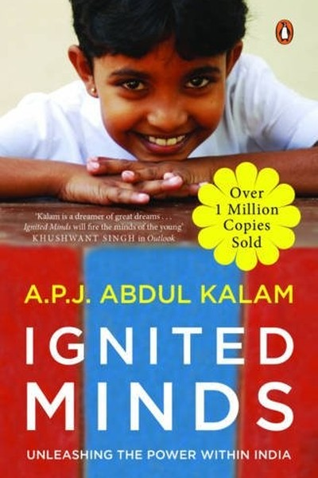

Library › Self-Improvement
Ignited Minds — Summary & Key Lessons

Kalam's call: your mind is India's greatest asset.
📖 OPEN THE FULL INTERACTIVE BREAKDOWN →🌐 Read it in Hindi, Hinglish, Gujarati, Tamil & 22 more languages — free, with audio.
💡 The Big Idea
Written when he was India's President, Kalam's 'Ignited Minds' is a call to the nation's youth: India's real asset is not its rivers, minerals or even its democracy — it is the ignited minds of its young people. He lays out five missions for a developed India — agriculture and food processing, healthcare, education, infrastructure, and the digital economy — and argues that each is achievable if individuals take responsibility. The book's core: national transformation is personal transformation at scale; the country becomes what its citizens decide to build, one disciplined, dreaming mind at a time.
🧠 The 6 Key Lessons
Lesson 1: The Power of the Ignited Mind: Young India Is the Asset
Part 1: The Foundation
Kalam's central claim: India's greatest resource is neither land nor capital but the latent energy of its youth — 'ignited minds' that, once lit, can achieve anything. He sees the country's problems (poverty, corruption, inertia) as problems of unlit potential rather than missing resources. The lesson: your environment may be poor, but your mind is the asset that compounds. The person who treats their own potential as the primary resource — learning, building, daring — becomes the solution to their circumstances rather than the victim of them. Ignition begins with one person deciding to burn.
📖 Example: Kalam constantly cites his own journey — a newspaper-boy from Rameswaram to the nation's President — as proof that the ignited mind, not the privileged start, is what matters. The ignition is the difference. Read the full example →
⚡ Do this: Write down the one skill or dream you've been treating as 'someday'. Ignite it this week with one hour of actual work.
Lesson 2: The Five Missions: Vision Needs a Work List
Part 2: The Missions
Kalam converts 'a developed India' from a slogan into five concrete missions: food and agriculture, healthcare, education, infrastructure, and information technology. The lesson: vision without a work list is a wish. The person who says 'I want success' has nothing to do tomorrow; the person who says 'mission one: build skill X by March' has a calendar. Kalam's method — break the dream into numbered missions, each with a clear domain — is the same method that builds nations and careers. Name your five missions, then work them in order.
📖 Example: Kalam's five missions each had target outcomes and domains — not 'make India great' but 'self-sufficiency in food processing by 2010'. The specificity was the strategy. Read the full example →
⚡ Do this: Write YOUR five missions — five concrete domains where you'll build capability this year. Number them. Start mission one today.
Lesson 3: The Greatness of Ordinary People
Part 3: The Heroes
Kalam fills the book with heroes who are not famous: the village teacher who transforms a school, the scientist who works without recognition, the farmer who adopts new methods. His point: national development is built by ordinary people doing extraordinary consistency, not by a few celebrities. The lesson: don't wait to be noticed to do great work — the unnoticed work is what actually builds things. The teacher who shows up daily, the engineer who sweats the detail, the citizen who does their duty without applause — these are the real engines. Greatness is a consistency, not a spotlight.
📖 Example: Kalam recounts meeting a teacher in a remote village whose students outperformed city schools — her methods were simple, her devotion total, her name unknown. The nation's future was being built in her classroom. Read the full example →
⚡ Do this: Do one piece of 'unnoticed greatness' this week — excellent work with no audience. Log it; that's nation-building at your scale.
Lesson 4: Dreams Need Discipline: The Rocket Scientist's Habit
Part 4: The Discipline
Kalam's own life — decades of missile and space work — demonstrates his rule: dreams are lit by passion but sustained by discipline. The daily grind of calculations, tests, failures and retries is the reality behind every 'impossible' achievement. His lesson: the romantic version of success (inspiration, applause) is a lie; the real version is unglamorous repetition. The person who can do the boring work of their dream — daily, without applause — is the person whose dream happens. Discipline is not the enemy of the dream; it is the dream's body.
📖 Example: The SLV-3 project Kalam led failed its first launch and succeeded on later attempts — between them lay years of disciplined, unphotographed work. The public saw the success; the discipline was invisible. Read the full example →
⚡ Do this: Attach one disciplined daily practice to your biggest dream — 30 minutes, same time, no applause. The repetition is the rocket.
Lesson 5: Leaders as Lighthouses: The Mentor's Duty
Part 5: The Leadership
Kalam's leadership model: leaders are lighthouses — they don't push ships, they show the way and stay steady. His examples: scientists who mentored juniors, teachers who became role models, officials who served rather than ruled. The lesson: the leader's highest function is to ignite others — to be the steady light that young minds can navigate by. The manager who only manages tasks misses the job; the leader who models values and mentors people creates the next generation of lighthouses. Leadership is passing the flame, not holding it.
📖 Example: Kalam credits his own mentors — Sarabhai, teachers, seniors — who lit his path and then stepped aside. His book is his attempt to be the same lighthouse for a new generation. Read the full example →
⚡ Do this: Mentor one person this month — a student, a junior, a friend — with steady, selfless guidance. Be the light, not the push.
Lesson 6: The Nation Is a Reflection: Personal Responsibility First
Part 6: The Call
The book's closing argument: the India of the future is the sum of its citizens' daily choices — the honest official, the diligent student, the responsible citizen. Kalam refuses the alibi of 'the system': the system is made of people, and each person's integrity is a vote for the system they want. The lesson: stop outsourcing your country (or your company, or your family) to 'them'. The change you demand from the system begins as the change you demand from yourself. Take responsibility first; the reflection follows.
📖 Example: Kalam ends each chapter with 'what can you do?' — a direct question to the reader, refusing to let anyone off the hook with the excuse that change belongs to someone else. The call is personal. Read the full example →
⚡ Do this: Choose one 'systemic' problem you complain about and take one personal action toward fixing it this week. The reflection starts with you.
✅ 5-Step Action Plan
- Ignite one 'someday' dream with one hour this week.
- Write your five missions with concrete targets.
- Do one act of unnoticed greatness.
- Attach a daily disciplined practice to your biggest dream.
- Take one personal action on a problem you usually blame on 'the system'.
💬 Best Quotes from Ignited Minds
- “Ignited minds are the nation's greatest resource.”
- “Greatness is a consistency, not a spotlight.”
- “Discipline is not the enemy of the dream; it is the dream's body.”
Interactive version: mark lessons as read, listen in your language, share quote cards.